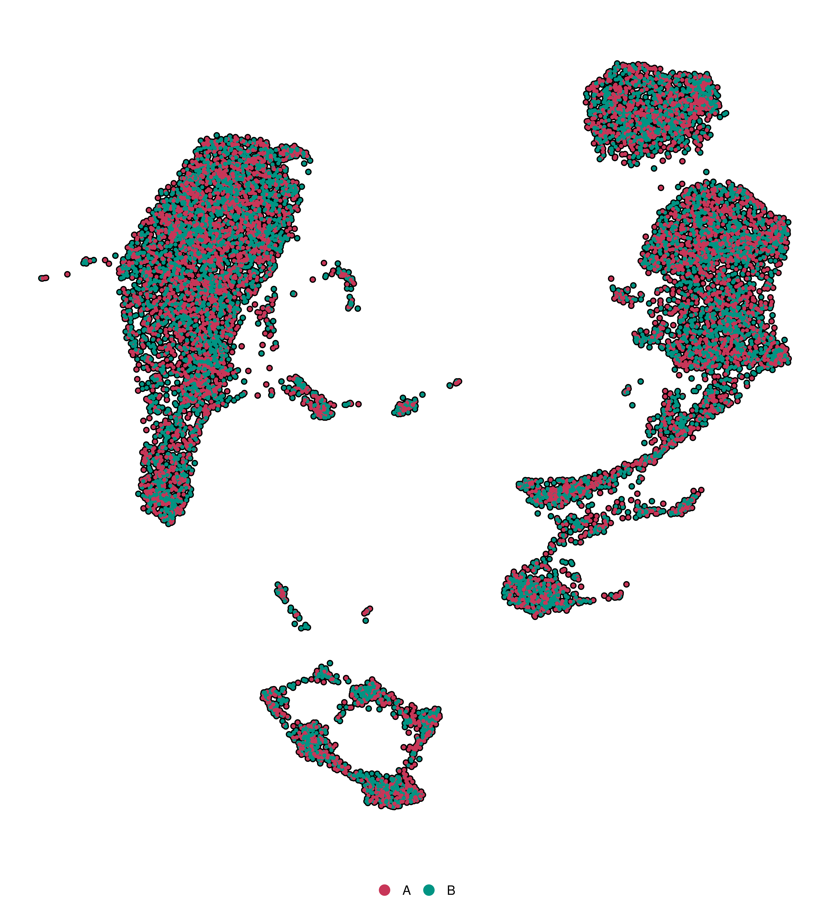
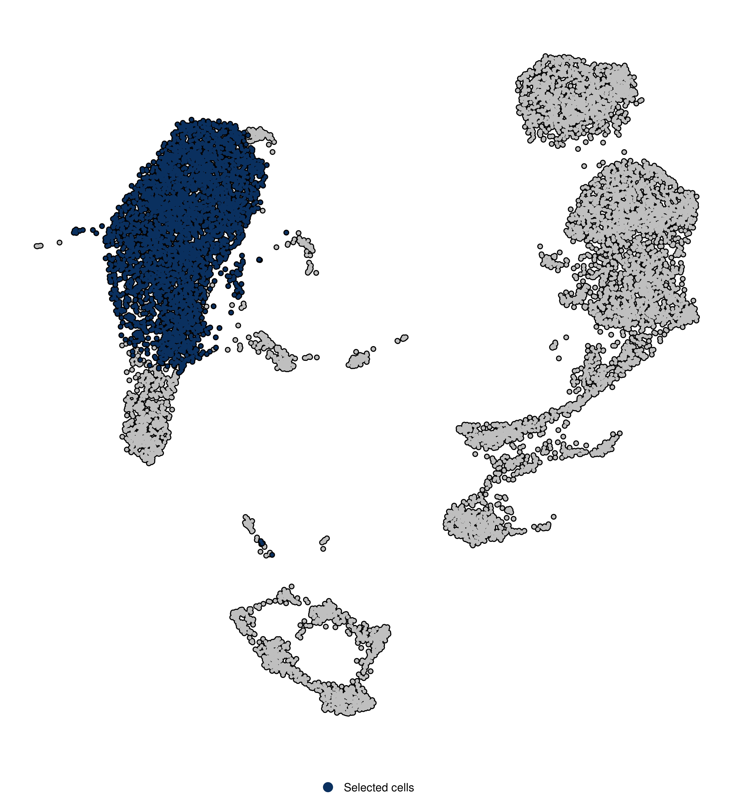
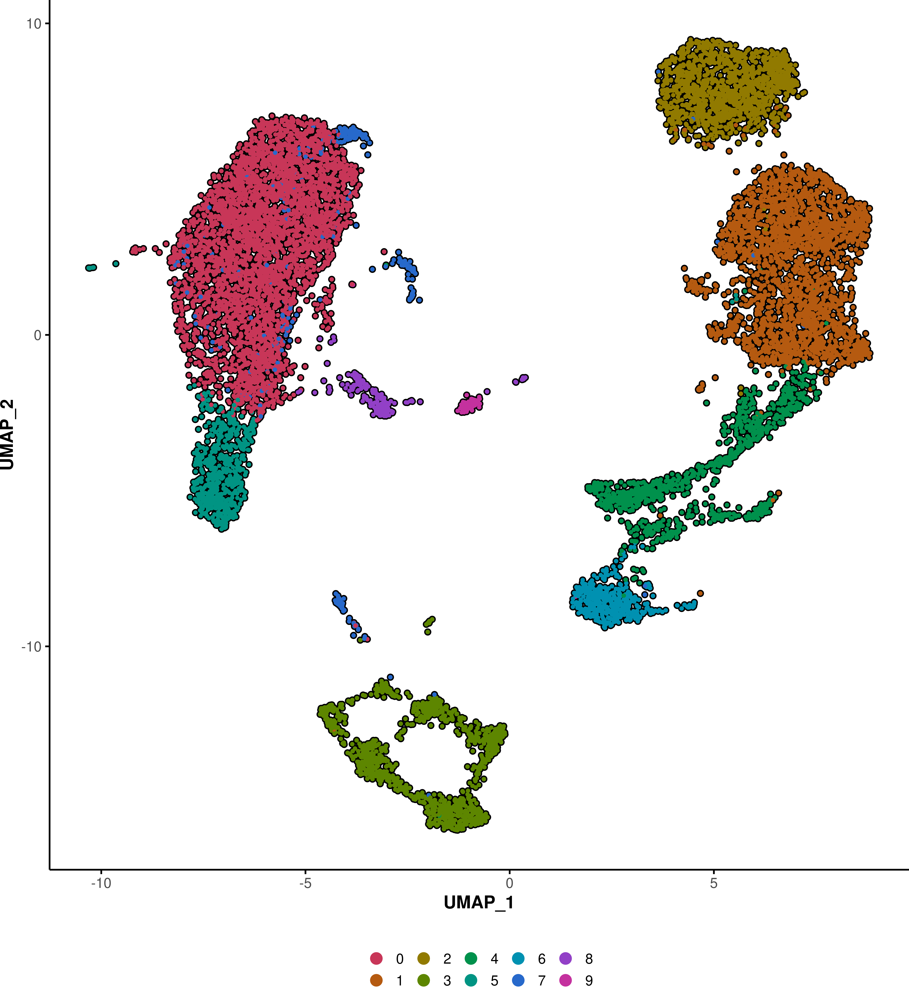

SCpubr::do_DimPlot(sample = sample)do_DimPlot()
Regular DimPlot
Group by a variable
SCpubr::do_DimPlot(sample = sample,
group.by = "annotation")
Split by a variable
SCpubr::do_DimPlot(sample = sample,
split.by = "annotation")
Group by a variable and split by a second variable
SCpubr::do_DimPlot(sample = sample,
group.by = "seurat_clusters",
split.by = "annotation")
Restrict the identities shown to a subset.
SCpubr::do_DimPlot(sample = sample,
idents.keep = c("0", "2"))Highlight cells
# Highlight a given set of cells
SCpubr::do_DimPlot(sample = sample,
cells.highlight = sample(colnames(sample), 100))# Highlight a given identity from Seurat::Idents(sample).
SCpubr::do_DimPlot(sample = sample,
idents.highlight = "0")
A combination of cells.highlight and idents.hightlight also works!
Select a dimensional reduction embedding
SCpubr::do_DimPlot(sample = sample,
reduction = "pca")Select which dimensions to plot
SCpubr::do_DimPlot(sample = sample,
reduction = "pca",
dims = c(1, 2))
Note that, by default, the dimensional reduction of choice is the lastest computed in the Seurat object.
Add back the Axes
SCpubr::do_DimPlot(sample = sample,
plot.axes = TRUE)
Label the clusters
# Label the clusters - label geom.
SCpubr::do_DimPlot(sample = sample,
label = TRUE)# Label the clusters - text geom.
SCpubr::do_DimPlot(sample = sample,
label = TRUE,
label.box = FALSE)Label the clusters and repel the labels
# Label the clusters - label geom.
SCpubr::do_DimPlot(sample = sample,
label = TRUE,
repel = TRUE)# Label the clusters - text geom.
SCpubr::do_DimPlot(sample = sample,
label = TRUE,
label.box = FALSE,
repel = TRUE)Modify the color and fill of labels
# Label the clusters - modify the color of the text and label border..
SCpubr::do_DimPlot(sample = sample,
label = TRUE,
repel = TRUE,
label.color = "blue")# Label the clusters - modify the fill of the labels.
SCpubr::do_DimPlot(sample = sample,
label = TRUE,
repel = TRUE,
label.color = "yellow",
label.fill = "black")
Change the default colors
# Define a set of colors.
colors <- c("0" = "#001219",
"1" = "#005f73",
"2" = "#0a9396",
"3" = "#94d2bd",
"4" = "#e9d8a6",
"5" = "#ee9b00",
"6" = "#ca6702",
"7" = "#bb3e03",
"8" = "#ae2012",
"9" = "#9b2226")
# Label the clusters - text geom.
SCpubr::do_DimPlot(sample = sample,
colors.use = colors)And more!
There are many synergies across functions. Have a look at the section Shared features across functions!